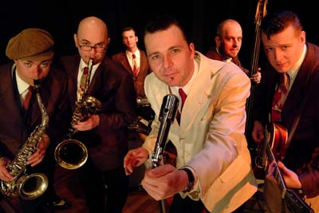

Многие американцы, услышавшие группу в первый раз, спрашивали - «Откуда они? Как? Из Швеции? Не может быть! Я не думал, что в Швеции умеют играть блюз!». Оказывается, что умеют и гораздо лучше, чем 80% очень известных во всем мире американских музыкантов.Вокалист и гармонист Knock-Out Greg (Нокаут Грег), он же в миру - Грегер Андерсон, собрал свою группу вместе с братом барабанщиком Маркусом в далеком 1987 году. В нее с самого начала вошли музыканты-единомышленники, которых объединяла бесконечная любовь к музыке и желание воссоздать звук «ретро-блюза» 40х - 50х годов, появившегося, когда к Чикагскому блюзу были примешаны элементы свинга и джаза. И позже это привело к появлению Вест-Коаст и Джамп-Блюза, наиболее живых на сегодня направлений в современном блюзе.
«Совершенство стиля» - вот какие слова приходят на ум, когда слушаешь или смотришь на Knock-Out Greg & Blue Weather, а их успех состоит из многих компонент. Это и использование традиционных музыкальных инструментов и оборудования, кропотливая работа в студии для записи самого правильного звука и работа над собственным стилем. Все группа делает совершенно так, как надо: акустический контрабас, духовая секция, гармоника и полуакустическая гитара, звучащие через ламповые усилители с вибрато.
Игра Нокаут Грега на губной гармонике восхищает, и он демонстрирует владение всеми тонкостями звукоизвлечения. Он никогда не переигрывает, добиваясь результата за счет мощного тона гармоники, а не количества нот в соло, всегда выбирая нужный стиль для каждой песни. Группа исполняет кавера тщательно подобранных блюзовых и ранних ритм-н-блюзовых композиций, но большую часть репертуара составляют собственные песни гитариста Anders Lewen, сочиненные в том же ретро-стиле. Изысканный гитарный стиль Андерса Левена звучит как ненаписанная классика 40-50-х годов. А некоторые обозреватели даже перечисляют его в ряду столпов современного гитарного Вест-Коаст блюза вместе с Rick Holmstrom, Junior Watson, Alex Shultz и Kid Ramos.
Музыка Knock-Out Greg будучи совершенной стилизацией не теряет оригинальности. Как сказал знаменитый гитарист Fabulous Thunderbirs Кид Рамос, известный своим опытом по воссозданию традиционного звучания: "Это - не ретро, это - незаконченное дело.» И действительно, музыка Blue Weather, заимствуя многое у классиков - T-Bone Walker, Little Walter, Sonny Boy Williamson II и других, является очень свежим и оригинальным развитием неоконченного дела классиков блюза. Такую музыку, пожалуй, не получится найти ни в 50-х, ни среди наших блюзовых героев-современников.
А теперь еще об истории. Отыграв в течении 3-х лет по 200 концертов в год, в 1995 году группа выпустила первую пластинку Blues Disease на независимом лейбле Last Buzz Records. Результат был настолько успешным, что следующую пластинку они уже записывали в знаменитой студии Delmark Studios в Чикаго, а их продюссером выступил голос американского вест-коаст блюза Lynwood Slim. Всего у группы вышло 5 пластинок, а самая яркая из них - The Wig Flipper получила множество восхищенных рецензий по всему миру, включая основные американские блюзовые издания.
Сегодня Knock-Out Greg & Blue Weather является одной из самых популярных европейских блюзовых групп, круглый год колесящей по Европе с гастролями и выступившей на большинстве европейских блюзовых фестивалей. С группой на гастролях регулярно играют американские и европейские блюзовые музыканты - Junior Watson, Homesick James, Johnny Mars, Lynwood Slim, Sven Zetterberg, Mike Sanchez и другие.
Интервью с гитаристом Андерсом Левеном в переводе Екатерины Гершензон.
О группе в статье Федора Романенко, посвященной Notodden Blues Festival 2002.
Официальный сайт Knock-Out Greg & Blue Weather